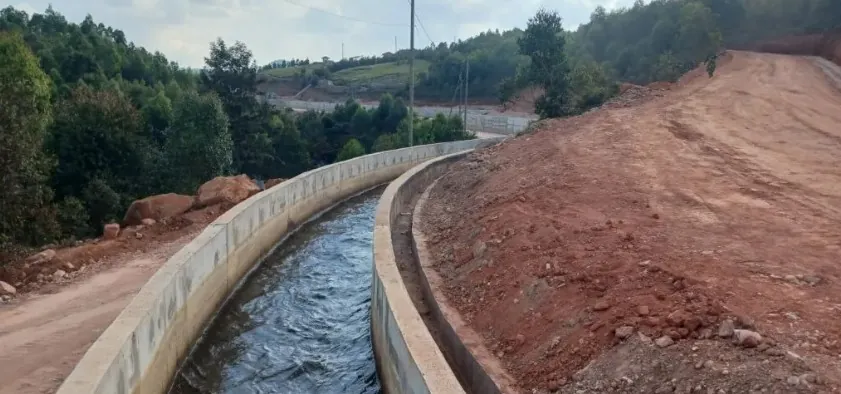
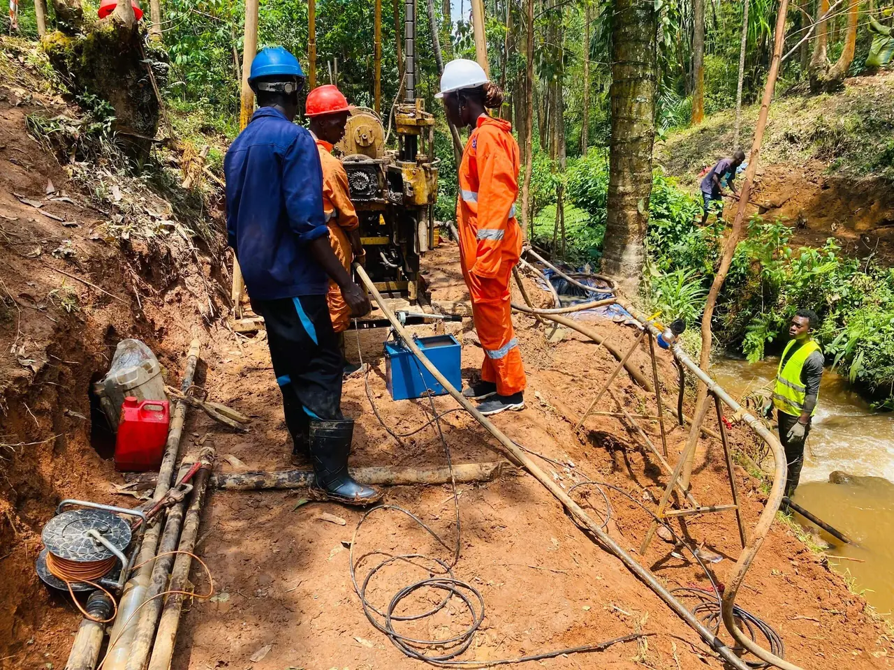
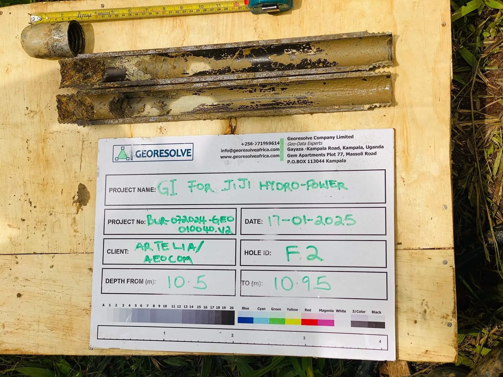
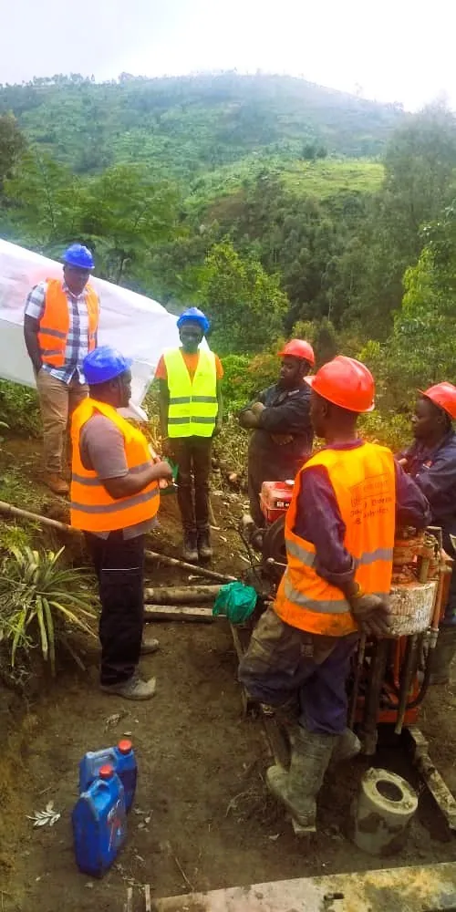

Subsurface investigations for hydropower, dams, mining and infrastructure across Burundi — delivered by a francophone East-African geoscience team.
Burundi sits on the western branch of the East African Rift, with a basement of Archean-Paleoproterozoic greenstone belts (the Burundian Supergroup) flanked by Kibaran-age granites and intercontinental rift sediments around Lake Tanganyika and the Imbo and Moso plains. This geology — weathered, fractured and variable — makes a proper subsurface investigation essential before any dam, road, building or mine works.
GeoResolve combines non-invasive geophysics with targeted drilling to reduce risk and cost. For hydropower and dam foundations we map the dam axis and abutments with seismic refraction and MASW (shear-wave velocity, Vs30), locate seepage paths and altered zones with ERT, and confirm bedrock with boreholes and SPT. For exploration we deploy magnetic, EM and ERT surveys over the greenstone belts.

GeoResolve carried out the geophysical and geotechnical site investigation for a 1 MW run-of-river hydro-solar hybrid scheme at Mutambu, supporting foundation design for the intake, weir and powerhouse. Seismic and ERT profiling defined bedrock and weathering, with drilling confirming the design levels.

Geotechnical slope-stability and access investigations supporting infrastructure development, combining geophysics with borehole logging to assess cut-and-fill conditions.

Subsurface characterisation for a hydropower scheme, mapping the dam axis and foundation conditions with seismic and resistivity methods.

We offer seismic refraction and tomography, MASW, electrical resistivity tomography (ERT), magnetic surveys, ground-penetrating radar (GPR), borehole drilling with SPT, and groundwater (VES/ERT) studies — typically combined for a robust subsurface model.
Pricing depends on survey area, method mix, access and depth targets. The quick estimator on our contact page gives an indicative figure; most site investigations are quoted after a short scope discussion.
Yes. We have delivered dam-axis and foundation investigations for hydropower, including the Mutambu 1 MW hydro-solar hybrid, using seismic, ERT and drilling to characterise abutments and bedrock.
Yes. We run magnetic, EM, IP and ERT surveys, geological mapping and RC/diamond drill management over the Burundian greenstone belts for gold, tin, tungsten and pegmatite exploration.
Yes. Deliverables include interpreted sections, 2D/3D models and a full report. We work in French and English and can deliver reports in either language for Burundi clients.
Contact our francophone team for a scope and quote — in French or English.